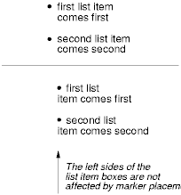

CSS is a language for describing the rendering of structured documents (such as HTML and XML) on screen, on paper, in speech, etc. This draft contains the features of CSS level 3 relating to list styling. It includes and extends the functionality of CSS level 2 [[!CSS21]], which builds on CSS level 1 [[CSS1]]. The main extensions compared to level 2 are summarize here.
This document has been unowned since 7 November 2002.
The list model in this module differs in some important ways from the list model in CSS2, specifically in its handling of markers. Implementation experience suggested the CSS2 model overloaded the ::before and ::after pseudo-elements with too much behavior, while at the same time introducing new properties when existing properties were sufficient.
Most block-level elements in CSS generate one principal block box. In this module, we discuss two CSS mechanisms that cause an element to have an associated marker: one method associates one principal block box (for the element's content) with a separate marker box (for decoration such as a bullet, image, or number), and the other inserts a marker box into the principal box. Unlike :before and :after content, the marker box cannot affect the position of the principal box, whatever the positioning scheme.
For instance, the following example illustrates how markers may be used to add parentheses around each numbered list item. This HTML application and style sheet:
<!DOCTYPE HTML PUBLIC "-//W3C//DTD HTML 4.0//EN">
<HTML>
<HEAD>
<TITLE>Creating a list with markers</TITLE>
<STYLE type="text/css">
LI::marker { content: "(" counter(list-item, lower-roman) ")"; }
LI { display: list-item; }
</STYLE>
</HEAD>
<BODY>
<OL>
<LI> This is the first item. </LI>
<LI> This is the second item. </LI>
<LI> This is the third item. </LI>
</OL>
</BODY>
</HTML>
should produce something like this:
(i) This is the first item. (ii) This is the second item. (iii) This is the third item.
With descendant selectors and child selectors, it's possible to specify different marker types depending on the depth of embedded lists.
A future release of this module will probably include ways to render tree lists.
To declare a list item, the 'display' property should be set to 'list-item'. This, in addition to generating a ::marker pseudo-element and enabling the properties described below for that element, causes that element to increment the list item counter list-item. (This does not affect the specified or computed values of the counter properties.)
The list-item counter is a real counter, and can be directly affected using the 'counter-increment' and 'counter-reset' properties. It can also be used in the counter() and counters() function forms.
The CSS3 box module may define other 'display' values which generate a list marker. These should also affect the 'list-item' counter.
Note that this new model makes the marker display type redundant. That display type is therefore obsolete in the CSS3 Lists model.
| Name: | list-style-type |
|---|---|
| Value: | <glyph> | <algorithmic> | <numeric> | <alphabetic> | <symbolic> | <non-repeating> | normal | none |
| Initial: | disc |
| Applies To: | all elements with ''display: list-item'' |
| Inherited: | yes |
| Media: | visual |
| Computed Value: | specified value |
This property specifies the default appearance of the list item marker if 'list-style-image' has the value 'none' or if the image pointed to by the URI cannot be displayed. The value 'none' specifies no marker, otherwise there are six types of marker: glyphs, algorithmic systems, numeric systems, alphabetic systems, symbolic systems, and non-repeating systems.
Glyphs are single characters, whereas algorithmic, numeric, alphabetic, symbolic and non-repeating systems are designed so that each item in that style gets a deterministicly different marker. This makes lists easier to navigate.
Most numbering systems have a suffix defined. It is used when generating the default content for the marker.
Other values are defined in the following sections. User agents should follow these algorithms unless a more normative source is found.
All markers with the same glyph style should use the same glyph. To obtain other glyphs, authors should use the 'content' property of the ::marker pseudo-element.
The definitions above may be removed and made UA-dependent if it is found that there are discrepancies in the existing implementations.
We could add more values, there are certainly plenty to choose from in UNICODE. How about a star? Or a triangle? Note that the stylesheet of this document uses triangular bullets for notes, and yet that can only be described using a pseudo-element, content property, and unicode escape. Is that too much effort for a simple triangle?
A future level of CSS may provide a way to specify different bullet types at arbitrary nesting levels. The Working Group considered adding an auto value with the following definition, but decided not to include it in this release: "The auto value is intended to cause the UA to use a list numbering style different from that of the nearest ancestor list-item element. The exact rendering depends on the user agent."
Glyphs have no suffix.
A user agent that does not recognize a numbering system should ignore the declaration in which the numbering system is used.
For example, the following HTML document:
<!DOCTYPE HTML PUBLIC "-//W3C//DTD HTML 4.0//EN">
<HTML>
<HEAD>
<TITLE>Lowercase latin numbering</TITLE>
<STYLE type="text/css">
OL { list-style-type: lower-roman; list-style-type: ethiopic-halehame-om-et; }
</STYLE>
</HEAD>
<BODY>
<OL>
<LI> This is the first item.
<LI> This is the second item.
<LI> This is the third item.
</OL>
</BODY>
</HTML>
might produce something like this in a user agent that does not support the ethiopic-halehame-om-et list style type:
i. This is the first item. ii. This is the second item. iii. This is the third item.
Note that the list marker alignment (here, right justified) depends on the user agent style sheet's rules for the ::marker pseudo-element.
| Name: | list-style-image |
|---|---|
| Value: | <url> | none |
| Initial | none |
| Applies To: | all elements with ''display: list-item'' |
| Inherited: | yes |
| Media: | visual |
| Computed Value: | specified value |
This property sets the image that will be used as the list item marker. When the image is available, it will replace the marker set with the 'list-style-type' marker.
The following example sets the marker at the beginning of each list item to be the image "ellipse.png".
LI { list-style-image: url("http://www.example.com/ellipse.png") }
If a ''::marker'' pseudo-element has its 'content' property set to normal, the following algorithm should be used to generate the computed value of the property. Note that there being a computed value of the 'content' property is not enough for the ''::marker'' pseudo-element to be rendered. See the section on the 'list-style-position' property below.
Ths algorithm may be superseded by a more detailed algorithm given in the Generated and Replaced Content module, when it is released.
Given the following style sheet:
li { display: list-item; list-style-type: decimal /* initial value */; }
li::marker { content: normal /* initial value */; }
And the following document fragment:
<li> List Item </li>
The computed value of the 'content' property on the ''::marker'' pseudo-element of the list item element is:
counter(list-item, decimal) "\002E"
| Name: | list-style-position |
|---|---|
| Value: | inside | outside |
| Initial: | outside |
| Applies To: | all elements with ''display: list-item'' |
| Inherited: | yes |
| Media: | visual |
| Computed Value: | specified value |
This property specifies the position of the marker box in the principal block box. Values have the following meanings:
Note that a marker is only generated if the computed value of the 'content' property for the element's ''::marker'' pseudo-element is not ''inhibit''.
For example:
<!DOCTYPE HTML PUBLIC "-//W3C//DTD HTML 4.0//EN">
<HTML>
<HEAD>
<TITLE>Comparison of inside/outside position</TITLE>
<STYLE type="text/css">
UL { list-style: outside }
UL.compact { list-style: inside }
</STYLE>
</HEAD>
<BODY>
<UL>
<LI>first list item comes first</LI>
<LI>second list item comes second</LI>
</UL>
<HT>
<UL class="compact">
<LI>first list item comes first</LI>
<LI>second list item comes second</LI>
</UL>
</BODY>
</HTML>
The above example may be formatted as:

In right-to-left text, the markers would have been on the right side of the box.
| Name: | list-style |
|---|---|
| Value: | <'list-style-type'> || <'list-style-position'> || <'list-style-image'> |
| Initial: | N/A (shorthand property) |
| Applies To: | all elements with ''display: list-item'' |
| Media: | visual |
| Computed Value; | N/A (shorthand property) |
The 'list-style' property is a shorthand notation for setting the three properties 'list-style-type', 'list-style-image', and 'list-style-position' at the same place in the style sheet.
For example:
UL { list-style: upper-roman inside } /* Any UL */
UL > UL { list-style: circle outside } /* Any UL child of a UL */
Although authors may specify 'list-style' information directly on list item elements (e.g., LI in HTML), they should do so with care. The following rules look similar, but the first declares a descendant selector and the second a (more specific) child selector.
OL.alpha LI { list-style: lower-alpha } /* Any LI descendant of an OL */
OL.alpha > LI { list-style: lower-alpha } /* Any LI child of an OL */
Authors who use only the descendant selector may not achieve the results they expect. Consider the following rules:
<!DOCTYPE HTML PUBLIC "-//W3C//DTD HTML 4.0//EN">
<HTML>
<HEAD>
<TITLE>WARNING: Unexpected results due to cascade</TITLE>
<STYLE type="text/css">
OL.alpha LI { list-style: lower-alpha }
UL LI { list-style: disc }
</STYLE>
</HEAD>
<BODY>
<OL class="alpha">
<LI>level 1
<UL>
<LI>level 2</LI>
</UL>
</LI>
</OL>
</BODY>
</HTML>
The desired rendering would have level 1 list items with 'lower-alpha' labels and level 2 items with 'disc' labels. However, the cascading order will cause the first style rule (which includes specific class information) to mask the second. The following rules solve the problem by employing a child selector instead:
OL.alpha > LI { list-style: lower-alpha }
UL LI { list-style: disc }
Another solution would be to specify 'list-style' information only on the list type elements:
OL.alpha { list-style: lower-alpha }
UL { list-style: disc }
Inheritance will transfer the 'list-style' values from OL and UL elements to LI elements. This is the recommended way to specify list style information.
A URI value may be combined with any other value, as in:
UL { list-style: url("http://png.com/ellipse.png") disc }
In the example above, the 'disc' will be used when the image is unavailable.
A value of ''none'' for the 'list-style' property sets both 'list-style-type' and 'list-style-image' to ''none'', because it sets the 'list-style-type' to ''none'' (that is the first value in the list), and the initial value of the 'list-style-image' property, which isn't listed in that declaration, is ''none''. For this reason,
LI { list-style: none; }
will ensure that no list-item marker is displayed on LI elements, except if a value is explicitly given to the 'content' property of the ''::marker'' pseudo-element. In general, the best way to ensure that no marker is rendered is to not set the 'display' property to list-item.
Markers are created by setting an element's 'display' property to ''list-item. The ''list-item display type is, in every other respect, identical to the ''block'' display type.
The marker box is only created if the computed value of the 'content' property for the pseudo-element is not ''inhibit''. The rest of this section discusses the details of the positioning of the marker box if it is positioned outside. For details on positioning the marker box when it is an inside list marker, see the section on 'list-style-position'.
If the elements' 'list-style-position' property has the value ''outside'', then the value of the element's ''::marker'' pseudo-element's 'content' property is formatted in an independent marker box, outside the principal box. Marker boxes are formatted as an inline-block (i.e., they fit in one line box), so they are not as flexible as floats or absolutely positioned boxes.
Marker boxes have padding, borders and margins, just like inline-block elements. The marker box will be vertically aligned with the first line of content in the principal box, as specified by the pseudo-element's 'vertical-align' property. The marker box participates in the height calculation of the principal box's first line box. Thus, markers are aligned with the first line of an element's content. If no first line box exists in a principal box, the marker box establishes its line box alone. (The first line of a principle box is the one matched by the box's '::first-line' pseudo-element.)
The marker box is horizontally aligned with the start of the line box. Thus if a float intersects the element, moving the line box start, the marker box is moved as well. It is the responsibility of the author to ensure that sufficient margins are provided to prevent marker boxes overlapping with the floats. If the marker box is generating the line box, then it is aligned with the content area's start edge. The box model defines the properties 'float-displace' and 'indent-edge-reset' to control how far line boxes are moved in the presence of floats.
If the value of the 'width' property is ''auto'', the marker box content width is that of the content, otherwise it is the value of 'width'. For values of 'width' less than the content width, the overflow is visible. The 'overflow' property does not apply. The 'text-align' property determines the horizontal alignment of the content in the marker box.
Marker boxes may overlap principal boxes and other marker boxes. Overlap could happen for several reasons. If several nested elements without inline content all have marker boxes, for instance, or if a marker box has negative margins. Marker boxes are rendered at the same stack level as inline content of the principle box, as if it was the first box of the first line box.
The CSS2 'marker-offset' property is obsoleted in this model and has no effect. (It is replaced by the 'margin-right' property in left-to-right text, and the 'margin-left' property in right-to-left text.)
In the following example, the content is centered within a marker box of a fixed width. This document:
<!DOCTYPE HTML PUBLIC "-//W3C//DTD HTML 4.0//EN">
<HTML>
<HEAD>
<TITLE>Content alignment in the marker box</TITLE>
<STYLE type="text/css">
LI::marker {
content: "(" counter(counter) ")";
width: 6em;
text-align: center;
}
LI {
display: list-item;
counter-increment: counter;
}
</STYLE>
</HEAD>
<BODY>
<OL>
<LI> This is the first item. </LI>
<LI> This is the second item. </LI>
<LI> This is the third item. </LI>
</OL>
</BODY>
</HTML>
should produce something like this:
(1) This is the
first item.
(2) This is the
second item.
(3) This is the
third item.
The next example uses markers to number notes (paragraphs).
The following document:
<!DOCTYPE HTML PUBLIC "-//W3C//DTD HTML 4.0//EN">
<HTML>
<HEAD>
<TITLE>Markers to create numbered notes4>/TITLE>
<STYLE type="text/css">
P { margin-left: 12 em; }
P.Note::marker {
content: url("note.gif") "Note " counter(note-counter) ":";
text-align: left;
width: 10em;
}
P.Note {
display: list-item;
counter-increment: note-counter;
}
</STYLE>
</HEAD>
<BODY>
<P>This is the first paragraph in this document.</P>
<P CLASS="Note">This is a very short document.</P>
<P>This is the end.</P>
</BODY>
</HTML>
should produce something like:
This is the first paragraph
in this document.
Note 1: This is a very short
document.
This is the end.
The following example illustrates how markers may be offset from their element. This HTML application and style sheet:
<!DOCTYPE HTML PUBLIC "-//W3C//DTD HTML 4.0 Transitional//EN">
<HTML>
<HEAD>
<TITLE>Marker example 5</TITLE>
<STYLE type="text/css">
P { margin-left: 8em } /* Make space for counters */
LI::marker { margin: 0 3em 0 0; content: counter(list-item, lower-roman) "."; }
LI { display: list-item }
</STYLE>
</HEAD>
<BODY>
<P> This is a long preceding paragraph ...</P>
<OL>
<LI> This is the first item.
<LI> This is the second item.
<LI> This is the third item.
</OL>
<P> This is a long following paragraph ...</P>
</BODY>
</HTML>
should produce something like this:
This is a long preceding
paragraph ...
i. This is the first item.
ii. This is the second item.
iii. This is the third item.
This is a long following
paragraph ...
(Note the use of the implicit counter increment.)
This module has two profiles: CSS Level 1 and Full. There is no CSS2 profile because this module is incompatible with the CSS2 list model.
The CSS Level 1 module consists of 'list-style', 'list-style-position', 'list-style-image', and 'list-style-type' (but only the following values: 'disc', 'circle, square', 'decimal', 'lower-roman', 'upper-roman', 'lower-alpha', 'upper-alpha', 'none'). It does not include the ::marker pseudo element.
The Full profile contains everything.
This section is informative, nor normative.
/* Set up list items */
li { display: list-item; /* counter-increment: list-item; (implied by display: list-item) */ }
/* Set up ol and ul so that they reset the list-item counter */
ol, ul { counter-reset: list-item; }
/* Default list style types for ordered lists */
ol { list-style-type: decimal; }
/* Default list style types for unordered lists up to 3 deep */
ul { list-style-type: disc; }
ul ul { list-style-type: square; }
ul ul ul { list-style-type: circle; }
/* The type attribute on ol and ul elements */
ul[type="disc"] { list-style-type: disc; }
ul[type="circle"] { list-style-type: circle; }
ul[type="square"] { list-style-type: square; }
ol[type="1"] { list-style-type: decimal; }
ol[type="a"] { list-style-type: lower-alpha; }
ol[type="A"] { list-style-type: upper-alpha; }
ol[type="i"] { list-style-type: lower-roman; }
ol[type="I"] { list-style-type: upper-roman; }
/* The start attribute on ol elements */
ol[start] { counter-reset: list-item attr(start, integer, 1); counter-increment: list-item -1; }
/* The value attribute on li elements */
li[value] { counter-reset: list-item attr(value, integer, 1); counter-increment: none; }
/* The above rules don't fully describe HTML4 lists, since they do not cover
behaviors such as margins and the like. The following rules could be used
for this purpose:
ol, ul { display: block; margin: 1em 0; padding-left: 2.5em; }
ol ol, ol ul, ul ul, ul ol { margin-top: 0; margin-bottom: 0; }
li::marker { margin-right: 1em; text-align: right; }
*/
Another example is required here.
The following people and documentation they wrote were very useful for defining the numbering systems: Alexander Savenkov, Aryeh Gregor, Frank Tang, Jonathan Rosenne, Karl Ove Hufthammer, Musheg Arakelyan, Nariné Renard Karapetyan, Randall Bart, Richard Ishida Simon Montagu
As described in the introduction section, there are significant changes in this module when compared to CSS2.